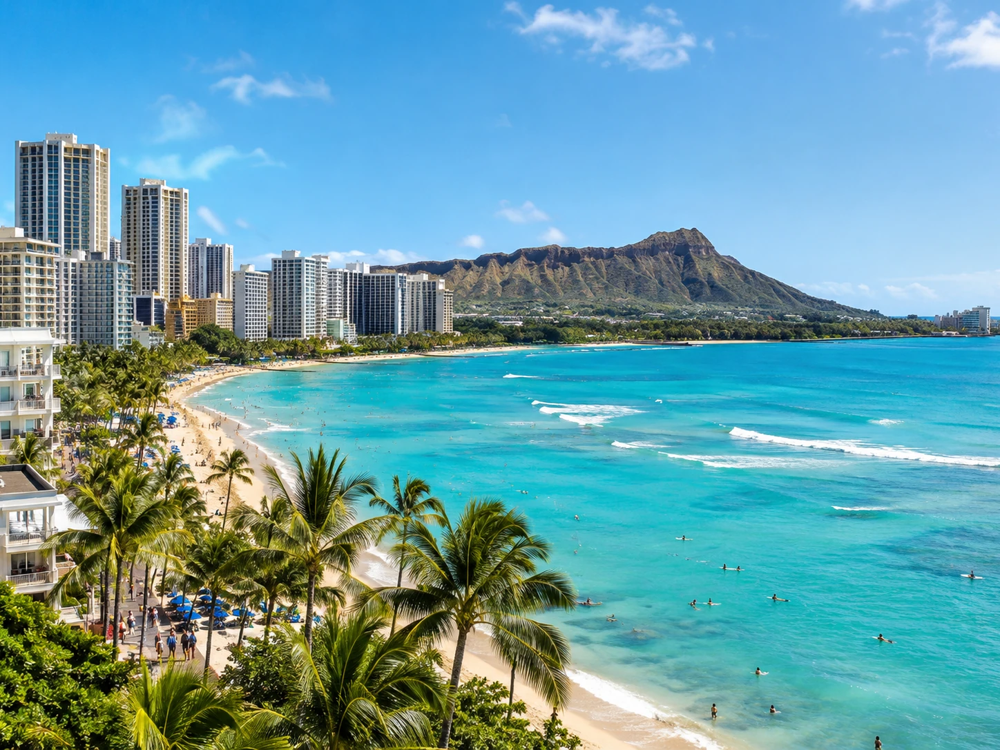
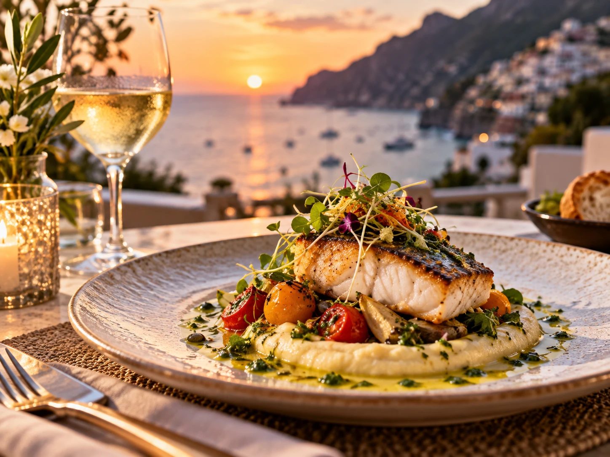

Oahu gives you the easiest mix
Waikiki gives you beach access, restaurants, shopping, and nightlife without needing a car every day. When you want more, you can drive to the North Shore, hike, snorkel, visit cultural sites, or explore other beaches around the island.
It works especially well for people who love the ocean but get restless at an isolated resort.
Puerto Rico has beach plus a real city
San Juan gives you colorful streets, history, bars, restaurants, and beaches, and you can add day trips to the rain forest or other parts of the island. For United States travelers, the logistics can also feel simpler because no passport is required.
It is a strong choice for a long weekend or a full week.

Jamaica brings food and excursions into the trip
Jamaica can give you jerk chicken, patties, seafood, music, waterfalls, rafting, beach days, and a resort if you want one. The island feels different depending on where you stay, so pick the region based on the kind of trip you want.
Negril is beach focused, Montego Bay is convenient, and Ocho Rios is good for activities.
Curaçao is great if you like to explore
The island has bright architecture, small beaches, clear water, restaurants, and a good road trip feel. Renting a car gives you the freedom to visit different coves and beach clubs instead of staying in one resort zone.
It is a nice choice for travelers who want beach time without spending every day in the same place.
Mallorca gives you a Mediterranean version
Mallorca combines beaches and coves with mountain towns, restaurants, coastal drives, and beautiful hotels. It works well when you want European food and culture without giving up the water.
The island is large enough to reward a rental car, but you can also choose one area and keep the trip slower.